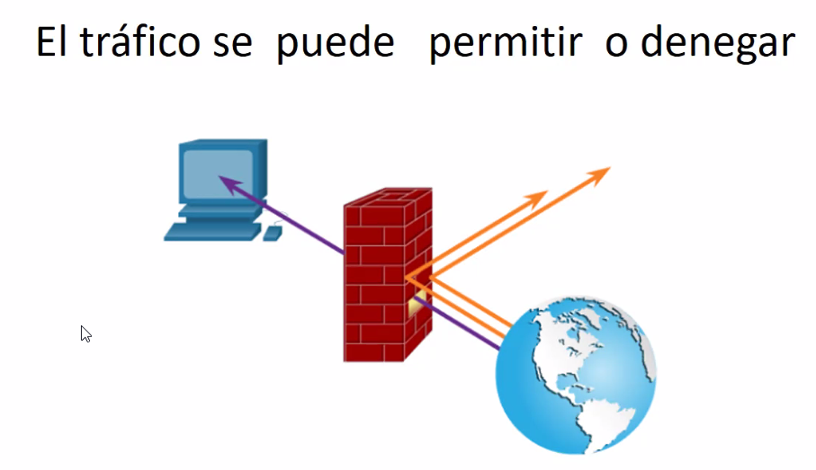

Por defecto, los routers no tienen restrucciones.
Sin embargo, se pueden configurar para permitir o degenear el flujo de paquetes (trafico).


Entradas y salidas: Desde el punto de vista del routers donde estamos.

ROUTER = FILTRO DE PAQUETES.
FIREWALL: ANALISIS DE PUERTOS (CAPA 4). Implementan listas de acceso.
Todas las applicaciones estan ligadas a un puerto de operación (applicacion session y).
Protocolos TCP y UDP: Capa de transporte.
Listas de control de acceso:
Analisis de paquetes en capa 3 (parquete es el PDU de la capa 3).
Las listas de control de acceso hacen el control de entrada y salida dependiendo del puerto